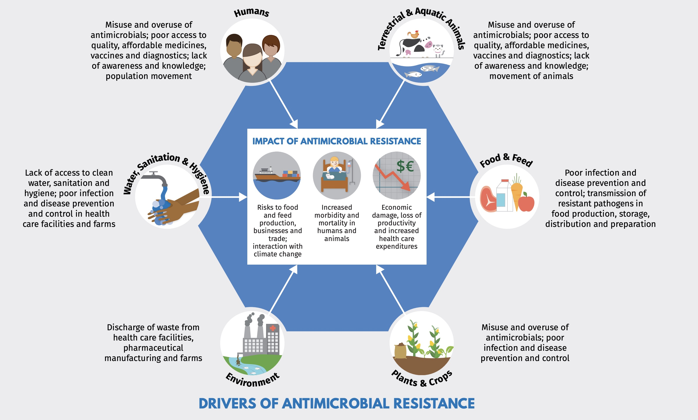

One-Health Perspective of AMR
Because the drivers of antimicrobial resistance lie in humans, animals, plants, food and the environment, a sustained One Health response is essential to engage and unite all health and environmental sectors around a shared vision and goals. “One Health” refers to designing and implementing programmes, policies, legislation and research in a way that enables multiple groups engaged in human, terrestrial and aquatic animal and plant health, food and feed production and the environment to communicate and work together to achieve better public health outcomes.

Figure 10. Elements for “One-Health Model” for addressing AMR. Source: WHO
Antibiotic use in animal food production
Few antimicrobial classes are reserved exclusively for humans. The vast majority of antibiotics are used both in humans and animals, including domestic mammals, birds, farmed fish and shellfish, honeybees and others. As noted earlier, 73% of all antibiotic consumption per weight is used for food production in animals.4Critically, two-third of all human infectious diseases that have emerged or re-emerged in recent decades are zoonotic-i.e. they originated in animals.12Therefore the transmission of antibiotic resistance organisms from the foodchain to humans is a major health concern.
In horticulture, tetracyclines, streptomycin, and other antimicrobials are used for the prophylaxis and treatment of bacterial infections that affect plants (e.g., “fire blight” caused by Erwinea amylovora afflicting apple and pear trees).
In veterinary medicine, there are major differences in the way antibiotics are used for companion animals (e.g., dogs, cats, pet birds, horses) versus food-producing animals. Antibiotic use in companion animals is broadly similar to humans for the treatment of infections or in select cases prophylaxis, such as post-surgery. In the case of food production, if some animals are infected, antibiotics may be administered through feed or water to the entire group for reasons of practicality or efficiency. Metaphylaxis is a term used to describe therapeutic/prophylaxis antibiotic treatment at a group level.
The most controversial type of group treatment in food animals is long-term, low-dose mass antibiotic treatment for purposes of growth promotion. This practice has a high propensity to select for antimicrobial resistance and is driven by economic factors rather than treatment of clinical infection. The practice was banned by the EU in 2006, but still continues in some countries such as the United States and China.

Figure 11. Pigs in cages, Quanzhou, China. As the largest consumer of veterinary antimicrobials, China is critical for combating antimicrobial resistance (AMR). From Van Boekel et al.4
The reported benefits of using antibiotics for growth promotion is controversial and supportive data in terms of weight gain is questionable (1-10%). Concerns have been expressed that antimicrobial growth promoters are often used to compensate for poor hygiene/housing conditions and appropriate healthy veterinary care.13
Unfortunately, use of antibiotic for growth promotion has increased dramatically with the growing demand in meat-based diets. Since 2000, meat production has plateaued in high-income countries but has grown by 68%, 64%, and 40% in Africa, Asia, and South America, respectively.4 The transition to high-protein diets in low- and middle-income countries (LMICs) has been facilitated by the global expansion of intensive animal production systems, in which antimicrobials are used routinely to maintain health and productivity.
There are 4 factors that typically determine the health of animals, (e.g., chickens):
- The genetic stock of the animals
- Adequate nutrition
- Hygiene of living conditions
- Adequate veterinary care
While antibiotics may be able to improve deficiencies in one area, if multiple aspects are missing then antimicrobial resistance is unlikely to improve animal health or growth. Thus, antimicrobials are often poor surrogates for good hygiene on farms. Ideally, a key goal to reduce antibiotic use in animals is to further strengthen the 4 non-antibiotic aspects that are important to animal health so antibiotic use can be avoided.
Historically, governmental regulations have focused on toxicological dose-response data and the presence of antimicrobial residues in animal tissue, milk or other edible products (i.e. eggs) from treated animals - so called minimum residue levels (MRLs) compatible with acceptable risk in humans. While MRLs are well-understood and enforced with testing programs and penalties, these programs do not take into account selection of antimicrobial-resistant pathogens.
The WHO has advocated for the termination of using antimicrobials for growth promotion. A recent report from the ECDC has suggested some progress in addressing this problem. Using surveillance data from 2017, the EU/EEA population mean antibiotic consumption in the 29 countries was 130 mg per kg of estimated biomass in humans and 108.3 mg per kg in food-producing animals. This first time since the agencies began publishing the joint reports in 2011 that antibiotic use in humans has exceeded use in livestock. Consumption of third- and fourth-generation cephalosporins, fluoroquinolones, and aminopenicillins was considerably higher in human medicine, while consumption of macrolides was similar, and consumption of tetracyclines and polymyxins—a last-resort class of antibiotics that includes colistin—was significantly higher in food-producing animals.
In 2022, new EU legislation will prohibit all forms of routine antibiotic use in farming, including preventative group treatments and medicated feeding except in extraordinary circumstances.
Figure 12. Antibiotic use in livestock reported in 2010. Source: Our World in Data.
The impact of animal antibiotic use on human AMR
Case study-cephalosporins
Third generation cephalosporins (ceftotaxime, ceftriaxone) are widely used for serious infections in humans, including the treatment of urinary tract, abdominal, lung and bloodstream infections. These antibiotics are classified as “critically-important” for human health (WHO AGISAR). Ceftiofur, cefpodoxime, and cefoperazone are similar cephalosporins approved veterinary antibiotics and used predominantly for treating bacterial infections in food-producing animals including chickens and cattle.
Resistance to 3rd generation cephalosporins is mediated by extended-spectrum beta-lactamases (ESBLs) and AmpC enzymes. ESBL genes are transmitted on plasmids, transposons and other mobile genetic elements that can spread horizontally (surrounding bacteria and different bacterial species) and vertically (to daughter cells through replication). In recent years, growing resistance to 3rd generation cephalosporins in clinical medicine has become so common among Escherichia coli and Klebsiella pneumonia that many common infections are now routinely treated first-line with previously “last-line” antibiotics as carbapenems.
A number of studies comparing isolates from animals, food and human infections have found a high genetic similarity or clonal isolates that carry the same ESBL genes and plasmids colonizing animals used for food production and isolates causing clinical infections in patients.14
In some chicken producing enterprises, ceftiofur is injected in small quantities to hatching eggs or chicks as metaphylaxis for Escherichia coli infections and/or yolk sac infections.13 (Fig1.7) This practice has been shown to select for cephalosporin resistance in Salmonella enterica serovar Heidelberg- an important cause of severe human illness (salmonella infection) that has been linked to consumption of contaminated poultry products.15

Figure 12. Chicken farm in the United States of America. Image source: The Guardian
An example of the link between ceftiofur metaphylaxis and infections in humans is illustrated by experience from Canada. Studies conducted by the Canadian Integrated Program for Antimicrobial Resistance Surveillance detected a high degree of temporal correlation in trends of resistance to ceftiofur and ceftriaxone (a drug of choice for the treatment of severe cases of salmonelloses in children and pregnant women) from Salmonella Heidelberg strains isolated from patients with clinical infections amd poultry samples collected at retail stores\[@Canada2009\]. Voluntary termination of ceftiofur metaphylaxis in hatcheries in the province of Quebec was followed by a precipitous drop in the prevalence of resistance to ceftiofur; subsequent reintroduction of ceftiofur in a more limited way was followed by a return to higher levels of resistance.

Figure 13. Ceftiofur resistance in chicken and human Salmonella Heidelberg and chicken E. coli.16
In Japan, voluntary withdrawal of the off-label use of ceftiofur in hatcheries in 2012 was also associated with significant decrease in broad-spectrum cephalosporin resistance in E. coli from chickens prepared for cooking. Some other countries (e.g., Denmark) have placed voluntary restrictions on ceftiofur use. The label claim for day-old injection of poultry flocks was withdrawn in Europe, while some countries have banned off-label use of third-generation cephalosporins, and in other countries there is a requirement that use be restricted to situations where no other effective approved drugs are available for treatment.
These examples illustrate the danger of using antibiotics from the same class as critical therapies used to treat human infections for metaphylaxis or treatment in large numbers of animals. Similar links between antibiotic metaphylaxis and resistance in human infections have been reported for fluoroquinolones antibiotics with Campylobacter jejuni.17
Case study- colistin
Colistin is a member of the polymixin class of antibiotics, which have been used in both human and veterinary medicine for over 50 years. Until relatively recently, polymyxin antibiotics were rarely prescribed beyond topical or inhalational therapy in rare cases because of dose-limiting neurotoxicity and nephrotoxicity of the drugs.
The use of intravenous colistin has surged in the last decade with the increase in carbapenem-resistant Pseudomonas aeruginosa, Acinetobacter baumannii and Klebsiella pneumoniae. Even as human use has increased, colistin continues to be used in Brazil, Europe and China a a growth promoting and antibiotic treatment for pigs, poultry and calves.
In 2014, colistin use in EU member states in animals was higher than humans with a reported 485 tonnes- 99.7% in oral form or oral medicated feed. In China, with the world’s largest production of pigs and poultry, an estimated 12,000 tonnes of colistin was used in the food production industry.18
In 2015, Lui and colleagues reported plasmid-mediated colistin-resistance gene, mcr-1, in Escherichia coli isolates obtained from animals, food and human bloodstream infections in China.18Alarmingly, the resistance gene has also been detected in 5% of healthy travellers from China in other parts of the world.19
The mcr-1 gene has also been detected in isolates obtained from wildlife and surface water samples, demonstrating environmental contamination.20
Additional plasmid-mediated colistin-resistance genes have been reported in many other bacterial species and countries, including mcr-2 from pigs in Belgium, and mcr-3,4,5 in other countries.21
Colistin illustrates important One-Health Dimensions of AMR that differ from third generation cephalosporins.22Use of large quantities of colistin for group treatment or growth promotion in animals has probably lead to antimicrobial resistance problems in human health, even through colistin was considered in the past to be less important because other less toxic treatments were still available.
In 2017, China banned the use of colistin as a food additive for animals. Colistin is currently not approved as a food additive in Europe or the United States, but is still be used in LMICs as a growth promoting agent because of its low cost.
Antimicrobial resistance in animals in LMICs
Many farmers in LMICs are sustenance farmers, and their livelihood is at stake if an animal becomes ill. Therefore, they may not have the resources for optimally nutritious feed and housing space/conditions. These challenges, combined with looser regulations on veterinary drugs, may facilitate the use of antimicrobials in feeding.4
Figure 14. Global hotspots of antimicrobial resistance in animals. Data source resistancebank.org
The largest hotspots of AMR in animals were in Asia and India. Asia is home to 56% of the world’s pigs and 54% of the chickens. Other growing hotspots of AMR are found in central India and Kenya, where resistance to multiple drugs has appeared but not yet reached 50%.
These data suggest that in areas such as Asia, targeted interventions such as legislative action and subsidies to improve farm hygiene could reduce the need for antimicrobials in animal production, thereby preserving important drugs for human medicine and the treatment of sick animals. In these regions, meat consumption is still low, but animal production is gradually increasing. Here, there may be a window of opportunity to contain AMR by imposing strict hygiene standards in newly built farms. This approach could reduce the risk of the spread of resistant pathogens such as mcr1–carrying E. coli that have emerged in regions where intensive meat production has been facilitated by enormous quantities of veterinary antimicrobials.
In Africa, resistance maps reveal the absence of major AMR hotspots, except for the Johannesburg metropolitan area. This suggests, on the basis of the regions surveyed, that Africa probably bears proportionately less of the current global burden of AMR than high- and upper- to middle income countries. Policy-makers coordinating an international response to AMR might therefore spare Africa from the most aggressive measures, which may undermine livestock-based economic development and rightfully be perceived as unfair.
Clearly the the transition to sustainable animal production in both HIC and LMICs with improvements in farm-level biosafety and biosecurity are essential to reduce the future risk of AMR.
For further study: In the 1990s avoparcin, a glycopeptide antimicrobial, was widely used in growth promotion in pigs and poultry production that was not initially thought to be of public health importance. Surveillance and research were eventually able to show that avoparcin use in animals contributed to the selection and wide dissemination of what type of resistance?
Environmental concerns
One Health considers possible environmental drivers of AMR in additional to human and animal health.13 Many resistance mechanisms such as beta-lactamases are millions of years old and pre-date antibiotics. Soil and other environmental sources are rich sources of highly-diverse populations of bacteria and genes.
Antimicrobial resistance to a wide variety of drugs has been demonstrated in environmental bacteria isolated from the pre-antibiotic era, as well as from various sites on every continent free of other sources of exposure to modern antimicrobials. Yet their is abundant evidence that human has an impact on the resistome- the totality of or resistance genes in the total environment.23
Hundreds of thousands of tonnes of antimicrobials are produced annually and find their way into the environment. Waste from treatment plants and the pharmaceutical industry especially if inadequately treated, has been show to release high concentrations of antimicrobials into surface water. Residues and metabolites of antimicrobials are constituents of human sewage, livestock manure, and aquaculture, along with fecal bacteria and resistance genes. Sewage treatment and composting of manure reduce concentrations of some but not all antimicrobials and micro-organisms, which are introduced to soil upon land application of human and animal bio-solids.24
- In developed countries with good-quality sewage and drinking water treatment, and where most people have little to no direct contact with food-producing animals, transmission of bacteria and resistance genes from agricultural sources is largely foodborne, either from direct contamination of meat and poultry during slaughter and processing, or indirectly from fruit and vegetables contaminated by manure or irrigation water.
- In countries with poor sewage and water treatment, drinking water is likely to be very important in the transmission of resistant bacteria and/or genes from animals. Poor sanitation also facilitates indirect person-person water-borne transmission of enteric bacteria among residents as well as international travellers who return home colonized with resistant bacteria acquired locally.
- Through these and other means, including globalized trade in animals and food and long-distance migratory patterns of wildlife, antimicrobial-resistant bacteria are globally disseminated.
General measures to address antimicrobial resistance in the wider environment include improved controls on pollution from industrial, residential, and agricultural sources. Improved research as well as environmental monitoring and risk assessment are also required to better understand the role of the environment in the selection and spread of antimicrobial resistance and to identify more specific measures to address resistance in this sector.

Figure 15. Hotspots of antimicrobial resistance. Figure is from Singer et al.25